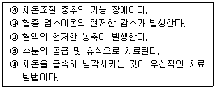
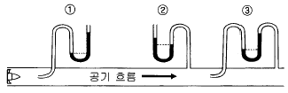

산업위생관리산업기사 (2004-05-23 기출문제)
1과목: 산업위생학 개론
1. 크롬을 사고로 먹었을 경우 응급조치로서 곧 우유와 환원제로 무엇을 섭취시켜야 하는가?
- 비타민 C
- 비타민 B1
- 비타민 B2
- 비타민 E
(정답률: 37%)

2. 체내조직을 구성하고 분해 소비되는 물질의 공급원(신체의 조직구성)이 되는 것과 가장 거리가 먼 것은?
- 단백질
- 무기질
- 물
- 탄소화물
(정답률: 64%)
3. 어떤 작업의 기초대사량이 1200㎉/일, 안정시 소요되는 열량이 1440㎉/일, 작업에 소요된 열량이 4000㎉/일 일때 작업대사율은?
- 1.1
- 2.1
- 3.1
- 4.1
(정답률: 93%)
4. 육체적 작업을 하는 근로자가 필요로 하는 영양소중에서 열량공급의 측면에서 가장 유리한 것은?
- 비타민
- 지방
- 단백질
- 탄수화물
(정답률: 67%)
5. 인간공학 활용시에는 3단계를 거쳐야 되는데 선택 단계에서 중요시하는 내용은?
- 인간과 기계 관계의 구성인자간 특성
- 인간과 기계가 각기 해야할 일
- 인간과 기계 관계의 실험적 검토
- 작업수행에 필요한 직종간의 연결성
(정답률: 알수없음)
6. 바람직한 교대제에 대한 설명으로 알맞지 않는 것은?
- 각 반의 근무시간은 8시간씩으로 한다.
- 야근 후 다음 반으로 가는 간격은 최저 48시간을 가지도록 한다.
- 야근근무의 연속은 일주일(5-7일)정도가 좋다.
- 2교대면 최저 3조의 정원을 그리고 3교대면 4조 편성으로 한다.
(정답률: 84%)
7. 산업피로의 증상 중에서 틀린 것은?
- 소변의 단백질 또는 교질물질의 배설량이 증가한다.
- 혈액내에 혈당치, 젖산량이 높아진다.
- 권태감, 졸음이 온다.
- 체온 조절기능이 저하된다.
(정답률: 80%)
8. 미국 국립산업안전보건 연구원(NIOSH)에서 제시한 중량물 취급 작업기준 중 감시기준(AL)과 최대허용기준(MPL)의 설정배경을 모두 만족한 경우의 적합한 기준을 바르게 연결한 것은?
- AL= 40㎏, MPL= 120㎏
- AL= 30㎏, MPL= 70㎏
- AL= 50㎏, MPL= 100㎏
- AL= 60㎏, MPL= 150㎏
(정답률: 82%)
9. 전신피로의 정도를 평가하려면 작업종료후 심박수(heartrate)를 측정하여 이용한다. 다음 중 가장 심한전신피로 상태라 판단할 수 있는 경우는? (단, HR1(종료후 30∼60초 사이의 평균맥박수), HR2(종료후 60∼90초 사이의 평균맥박수), HR3(종료후 150∼180초 사이의 평균맥박수))
- HR1이 60을 초과하고 HR3 와 HR2의 차이가 10 미만인 경우
- HR1이 60을 초과하고 HR3 와 HR2의 차이가 30 미만인 경우
- HR1이 110을 초과하고 HR3 와 HR2의 차이가 10 미만인 경우
- HR1이 110을 초과하고 HR3 와 HR2의 차이가 30 미만인 경우
(정답률: 94%)
10. 1700년 '직업인의 질병'을 발간하였으며 직업병의 원인을 크게 두가지로 구분하여 하나는 작업장에서 사용하는 유해물질이고, 다른하나는 근로자들의 불완전한 작업자세나 동작이라고 한 사람은?
- Hippocrates
- Georgius Agricola
- Percivall Pott
- Bernardino Ramazzini
(정답률: 30%)
11. 20세기초 미국의 산업보건 분야에서 크게 공헌한 선구자로서 1910년 납공장에 대한 조사를 시작으로 40여년간 각종 산업장을 다니면서 직업병의 발견과 작업환경 개선에 힘쓴 사람은?
- Sir George Baker
- Driller
- Alice Hamilton
- Ulrich Ellenberg
(정답률: 74%)
12. 작업대사율에 의한 작업 강도의 분류 중 틀린 것은?
- 경작업 : 0∼1
- 중등(中等)작업 : 1∼2
- 중(重)작업 : 2∼4
- 격심작업 : 7 이상
(정답률: 60%)
13. 다음 중 생리적 기능검사에 해당되지 않는 것은?
- 감각기능 검사
- 심폐기능 검사
- 체력 검사
- 지각동작 검사
(정답률: 70%)
14. 생체중에서 산소결핍에 대하여 가장 민감한 조직은?
- 소뇌피질
- 중뇌
- 대뇌피질
- 뇌간척수계
(정답률: 알수없음)
15. 산업안전보건법이 독립적으로 제정된 시기는?
- 1953년
- 1962년
- 1972년
- 1981년
(정답률: 73%)
16. 1일 8시간작업 기준시 납의 노출기준은 0.⑤㎎/m3이다. 1일 10시간 작업일 경우 Brief와 Scala의 보정방법으로 허용농도를 보정하면 얼마가 되는가?
- 0.030㎎/m3
- 0.035㎎/m3
- 0.040㎎/m3
- 0.045㎎/m3
(정답률: 58%)
17. 다음 중 Viteles가 주장하는 산업피로의 본질과 가장 거리가 먼 것은?
- 작업부하의 증가
- 생체의 생리적 변화
- 피로감각
- 작업량의 감소
(정답률: 30%)
18. 어떤 공장에서 300명의 근로자가 1년동안 작업하는 가운데 재해가 20건이 발생하였다. 이때 공장에서 발생한 재해의 도수율은? (단, 1년 작업일수 280일, 1일 8시간 근로기준)
- 26.26
- 28.75
- 29.76
- 31.25
(정답률: 82%)
19. 공기중에 Xylene(증기 비중 : 7.6)이 10,000ppm이 존재한다면 공기와 Xylene의 혼합물의 유효비중은? (단, 공기비중 1.0이다)
- 1.012
- 1.066
- 1.086
- 1.096
(정답률: 19%)
20. 근로자가 휴식 중일 때 산소소비량은 보통 얼마인가?
- 약 0.15 ℓ /min
- 약 0.25 ℓ /min
- 약 3.0 ℓ /min
- 약 5.0 ℓ /min
(정답률: 85%)
2과목: 작업환경측정 및 평가
21. 작업장에서 시료를 채취할 때에 다음 방법들 중에서 가장 좋은 방법은?
- 전작업시간 동안의 단일시료채취
- 전작업시간 동안의 연속시료채취
- 전작업시간 간헐시료채취
- 단시간 시료채취
(정답률: 알수없음)
22. 유기용제 취급 사업장의 톨루엔 농도가 각각 145.2, 56.3, 89.5, 25.8ppm 이었다. 이 사업장의 기하평균 농도는?
- 66 ppm
- 79 ppm
- 82 ppm
- 96 ppm
(정답률: 53%)
23. 0.001N - NaOH 수용액 중에 있는 [H+]는?
- 1 x 10-3㏖/ℓ
- 1 x 10-13㏖/ℓ
- 1 x 10-11㏖/ℓ
- 1 x 10-5㏖/ℓ
(정답률: 60%)
24. 아민류, 페놀류, 아마이드류, 무기산 등의 채취에 적합한 흡착제는?
- 활성탄관
- 실리카겔관
- XAD
- Tenax GC
(정답률: 47%)
25. 공기중 아세톤(분자량= 58.2)을 0.2L/분으로 20분 동안 채취하여 분석한 결과 5.2mg이었다. 공기중 아세톤농도는 몇 ppm인가? (단, 25℃, 1기압 기준 )
- 546.1
- 648.6
- 751.2
- 894.2
(정답률: 알수없음)
26. 석면 분진에 대한 농도단위는?
- 개/㎝3
- ㎎/m3
- g/m3
- ppm
(정답률: 100%)
27. 액체채취방법의 채취원리와 가장 거리가 먼 것은?
- 용해
- 흡착
- 반응
- 흡수
(정답률: 54%)
28. 여과지가 산에 쉽게 용해되어 가수분해되고 습식회화되기 때문에 공기 중 중금속을 시료포집한 후 원자흡광광도계로 분석하는데 가장 적당한 여과지는?
- MCE
- PVC
- PTFE
- glass fiber filter
(정답률: 60%)
29. 흡착제 중 실리카겔이 활성탄에 비해 갖는 장점이 아닌것은?
- 수분을 잘 흡수하여 습도가 높은 환경에도 흡착능 감소가 적다.
- 매우 유독한 이황화탄소를 탈착용매로 사용하지 않는다.
- 극성물질을 채취할 경우 물, 메탄올 등 다양한 용매로 쉽게 탈착된다.
- 추출액이 화학분석이나 기기분석에 방해물질로 작용하는 경우가 많지 않다.
(정답률: 47%)
30. 빛의 세기 Io의 단색광이 어떤 시료용액을 통과하여 그 광의 80%가 흡수되었을 때 흡광도는?
- 0.3
- 0.5
- 0.7
- 0.9
(정답률: 70%)
31. Toluene, Xylene 등의 유기용제 측정시 흔히 사용되는 시료채취법과 분석법은?
- 여과포집법, 중량분석법
- 활성탄관법, 원자흡광도법
- 활성탄관법, 가스크로마토그래피
- 여과포집법, 원자흡광도법
(정답률: 47%)
32. A특성치는 대략 몇 phon의 등감곡선에 해당하는가?
- 40 phon
- 70 phon
- 100 phon
- 130 phon
(정답률: 65%)
33. 전기로, 가열로와 같은 고온 작업장에서 주로 측정하는 온도계는 어느 것인가?
- 건구온도계
- 흑구온도계
- 습구온도계
- Kata온도계
(정답률: 34%)
34. 입자상 물질의 크기를 측정하는데 사용되는 물리적(기하학적)직경 중 먼지의 면적을 2등분하는 선의 길이로 선의 방향은 항상 일정하여야 하며 과소평가할 수있는 단점이 있는 것은?
- 마틴직경
- 페렛트직경
- 공기역학적직경
- 등면적직경
(정답률: 55%)
35. 작업장내 공기 중 아황산가스(SO2)의 농도가 400ppm일 경우 이 물질의 농도를 용적 백분율(%)로 표시하면 얼마인가? (단, SO2분자량 = 64)
- 4%
- 0.4%
- 0.04%
- 0.004%
(정답률: 64%)
36. 다음 중 표준오차를 나타내는 식은? (단, S.D : 표준편차, N : 측정치의 수, n : 자료의 수, M : 표본 평균치의 수, S.E : 표준오차 )
- S.E = S.D / √n
- S.E = M / √n
- S.E = √n / S.D
- S.E = S.D / N
(정답률: 34%)
37. 분석 및 자료처리에 관한 용어가 옳지 않게 설명된 것은?
- 회수율은 첨가량을 분석량으로 나눈 값이다.
- LOD는 공시료와 통계적으로 다르게 분석될 수 있는 가장 낮은 양을 말한다.
- 특이성이란 다른 물질의 존재에 관계없이 분석하고자 하는 대상물질을 정확하게 분석할 수 있는 능력을 말한다.
- LOD는 검량선에서 구한 방정식의 표준오차를 기울기로 나누어 3배를 해준 값으로 구할 수 있다
(정답률: 31%)
38. 시료채취분석오차(SAE)를 고려하여 95% 신뢰구간의 한계치인 UCL과 LCL를 구하여 노출기준에 대해 평가하고자 한다. 다음 중 옳지 않은 것은?
- UCL ≤ 1 이면 노출기준을 초과하지 않는다.
- LCL ≤ 1 이고 UCL ＞ 1 이면 노출기준을 초과할 가능성이 있다.
- LCL ≤ 1 이면 노출기준을 초과한다.
- UCL = (측정농도/노출기준) + SAE 이다.
(정답률: 34%)
39. 공기 중 시료채취원리에서 Vander Waals 힘과 관련있는 것은?
- 미젯임핀저
- PVC filter
- 활성탄관
- 유리섬유여과지
(정답률: 35%)
40. 직접채취방법에 사용되는 시료채취백의 적용상 주의점으로 거리가 먼 것은?
- 시료채취백의 선택시 오염물질과 반응성이 없는 제품을 선택해야 한다.
- 누출검사를 반드시 실시하여야한다.
- 순수공기로 내부 오염물질을 제거한 후 대상 공기로 수차례 치환하여야한다.
- 회수율이 항상 100%가 유지될 수 있도록 관리하여야 한다.
(정답률: 47%)
3과목: 작업환경관리
41. 상대적 독성(수치는 독성의 크기)이 2 + 2 → 4 와 같은 결과를 나타내는 화학적인 상호작용은?
- 상승작용
- 상가작용
- 길항작용
- 동일작용
(정답률: 77%)
42. 다음 중 유기용제 중독예방을 위한 가장 중요한 대책은?
- 일반 건강진단 실시
- 작업환경 개선
- 보호구 착용
- 작업시간 단축
(정답률: 43%)
43. 위해도 평가(Risk Assessment)시 고려하여야 할 요인과 가장 거리가 먼 것은?
- 유해인자의 관리
- 시간적 빈도와 기간
- 공간적 분포
- 노출대상의 특성
(정답률: 19%)
44. 균일한조명을 요하는 작업장 창의 방향으로 알맞는 것은?
- 남향
- 동남향
- 북향
- 서북향
(정답률: 35%)
45. 피부에 직접 유해물이 닿지 않도록 하는 방법인 피부 보호용 크림의 종류 중 피막형성형 보호제의 주된 역할로 알맞는 것은?
- 주로 분진,섬유유리 예방에 사용한다.
- 주로 산,알칼리 등 산화제 예방에 사용한다.
- 주로 수분보호 및 세균감염 예방에 사용한다.
- 주로 자외선 장해예방에 사용한다.
(정답률: 36%)
46. 유리규산으로 인하여 발생되는 진폐증의 종류로 가장 적절한 것은?
- 석면폐증
- 규폐증
- 면폐증
- 농부폐증
(정답률: 62%)
47. 귀덮개에 대한 설명으로 틀린 것은?
- 귀마개보다 차음효과는 작지만 개인차가 적고 보호구 착용여부가 쉽게 확인된다.
- 귀마개보다 쉽게 착용할 수 있고 착용법이 틀리거나 잃어 버리는 일이 적다.
- 귀에 질병이 있을때도 사용이 가능하다.
- 크기를 여러가지로 할 필요없다.
(정답률: 35%)
48. 다음은 국소진동 대책을 설명한 것들이다. 올바른 것은?
- 작업시에는 따뜻하게 체온을 유지시켜 준다.
- 진동공구의 무게는 20kg 이상 초과하지 않도록 한다.
- 작업의 효율을 위하여 두꺼운 장갑보다 얇은 장갑이 바람직하다.
- 총 동일한 시간을 휴식한다면 여러 번 자주 휴식하는 것보다 한 두 번의 장시간 휴식이 바림직하다.
(정답률: 28%)
49. 한랭작업장에서 취해야 할 개인 위생상 준수해야할 사항들이 많다. 다음중 이에 해당되지 않는 내용은?
- 팔다리 운동으로 혈액순환 촉진
- 약간 큰 장갑과 방한화의 착용
- 건조한 양말의 착용
- 적절한 식염수의 섭취
(정답률: 78%)
50. 출력 1watt의 점음원으로부터 100m 떨어진 곳의 SPL은? (단, 무지향성음원, 자유공간의 경우)
- 50㏈
- 59㏈
- 69㏈
- 79㏈
(정답률: 64%)
51. 고압환경에서 2차적 가압현상이 아닌 것은?
- 일산화탄소(CO) 작용
- 질소(N2) 작용
- 이산화탄소(CO2) 작용
- 산소(O2) 중독
(정답률: 57%)
52. 유기용제를 제거하기 위하여 사용되는 방독마스크의 흡수제로서 가장 흔히 사용되는 것은?
- 활성탄
- Soda lime
- 산용액
- hopcalite
(정답률: 67%)
53. 작업환경에서 발생되는 유해요인을 감소시키기 위한 기본 관리 개선책중 직접적이며 적극적인 대책과 가장 거리가 먼 것은?
- 유해작용이 적은 물질로 대치
- 유해작용이 있는 물질에 대한 개인 보호구 착용
- 유해작용이 있는 물질과 근로자의 격리
- 유해작용이 있는 물질을 사용하는 작업장에 전체환기 시설 내지는 국소 환기시설을 한다.
(정답률: 50%)
54. 중량물 취급작업에 대하여 미국 NIOSH에서는 감시기준(Action Level)과 최대허용기준(Maximum Permissible Limit)을 설정하고 있다. 감시기준이 30kg일 때 최대허용 기준은?
- 60kg
- 90kg
- 120kg
- 150kg
(정답률: 54%)
55. methemoglobin을 형성하는 화학적 질식제는?
- 일산화탄소
- 질소
- 황화수소
- 아닐린
(정답률: 29%)
56. 주요 독성을 나타내는 금속에 관한 설명으로 틀 린 것은?
- 알킬수은 중 메틸수은은 미나마타병을 비롯하여 종종 집단적인 중독증 발생의 원인이 된다.
- 수은의 만성독성으로서는 신장기능장애를 일으킨다.
- 크롬은 3가 크롬보다 6가 크롬이 체내 흡수가 많이 된다.
- 체내의 3가 크롬은 6가 크롬으로 산화되어 독성을 나타낸다.
(정답률: 17%)
57. 다음 중 자외선이 피부에 작용하는 설명으로 틀린 것은?
- 홍반형성에 이어 색소침착이 발생
- 280nm∼320nm의 자외선에 노출되면 피부암 발생 가능
- 자외선 조사량이 너무 많을 때에는 모세혈관의 투과성이 증가
- 자외선에 노출되면 표피 및 진피의 두께가 감소
(정답률: 73%)
58. 방향족 탄화수소중 조혈장해를 유발시키는 물질로 페놀등의 화학물질제조에 사용하는 것은?
- 톨루엔
- 크실렌
- 벤젠
- 포스겐
(정답률: 37%)
59. 유해작업환경 개선대책중 대치(substitution)에 해당되는 내용으로 틀린 것은?
- 세탁시 세정제로 사용하는 벤젠을 1, 1, 1-트리클로로 에탄으로 바꾸어 사용
- 수작업으로 페인트를 분무(spray)하는 것을 담그는 공정(dipping)으로 자동화
- 성냥제조시 적인(赤燐)대신 황인(黃燐)을 사용
- 자동차산업에서 Solder를 고속 회전식 그라인더로 깎아내던 작업을 저속 oscillating type sander로 변경
(정답률: 67%)
60. 다음의 내용 중에서 열사병에 대한 올바른 설명만을 짝지은 것은?

- ㉮, ㉲
- ㉯, ㉰
- ㉯, ㉱
- ㉮, ㉰
(정답률: 42%)
4과목: 산업환기
61. 집진기의 한 종류인 사이클론에서 분리능력을 나타내는 분리계수에 대한 설명 중 틀린 것은?
- 분리계수는 원심력을 중력으로 나눈 값이다.
- 반경이 작을수록 분리계수 값은 높아진다.
- 분리계수는 입자의 접속방향속도 제곱에 비례한다.
- 분리계수는 중력가속도와 비례한다.
(정답률: 54%)
62. 닥트직경이 20cm, 공기유속이 30m/sec인 경우 Reynolds수(Re)는 약 얼마인가? (단, 공기의 점성계수는 1.85×10-5kg/sec· m이고 공기밀도는 1.2kg/m3으로 가정)
- 189,189
- 289,189
- 389,189
- 489,189
(정답률: 55%)
63. 가벼운 건조먼지가 작업장내에 발생하고 있어 국소배기하려고 한다. 적당한 반송속도(m/sec)는?
- 15
- 10
- 5
- 1 ∼ 4
(정답률: 22%)
64. 덕트의 시작점에서는 공기의 베나수축(vena contracta)이 일어난다. 배나 수축이 일반적으로 붕괴되는 지점은?
- 베나 수축은 덕트직경의 약 1배쯤에서 붕괴된다.
- 베나 수축은 덕트직경의 약 2배쯤에서 붕괴된다.
- 베나 수축은 덕트직경의 약 3배쯤에서 붕괴된다.
- 베나 수축은 덕트직경의 약 4배쯤에서 붕괴된다.
(정답률: 58%)
65. 유입계수가 0.8이고 속도압이 15mmH2O 일 때 후드의 유입손실은?
- 6.3mmH2O
- 7.2mmH2O
- 7.8mmH2O
- 8.4mmH2O
(정답률: 39%)
66. 송풍기에 분진이 부착하고 날개에 마모가 일어나는 현상을 방지하기 위한 대책으로 적절치 않는 것은?
- 공기 정화기 뒤에 송풍기를 설치한다.
- 라이나(liner)를 발라서 날개나 케싱을 마모로 부터 보호한다.
- 일반적으로 터어보 송풍기를 사용한다.
- 날개 자체를 소모품으로 생각하여 교환이 쉽도록 고려한다.
(정답률: 알수없음)
67. 모든 방향으로 동일하게 영향을 주는 압력으로 공기흐름에 대한 저항을 나타내는 압력은?
- 전압
- 속도압
- 정압
- 분압
(정답률: 40%)
68. 세정식 집진장치중 물을 가압 공급하여 함진 배기를 세정하는 방법과 가장 거리가 먼 것은?
- 충진탑
- 벤츄리 스크러버
- 임페라형 스크러버
- 분무탑
(정답률: 60%)
69. 사이크론 제진장치에 있어서 중요한 것은 사이크론 입구의 유속이 된다. 다음 중 가장 적당한 유입유속(m/sec)범위는? (단, 접선 유입식 기준이며 원통상부에서 접선방향)
- 1.5 - 3.0
- 3.0 - 7.0
- 7.0 - 15.0
- 15.0 - 20.0
(정답률: 알수없음)
70. 다음 그림은 송풍기 후단에서 측정한 정압(SP), 속도압(VP), 전압(TP)이다. ①, ②, ③에 들어갈 측정압력 값을 기록한 것으로 맞는 것은?

- ① VP = +25mmH2O ② SP = +10mmH2O ③ TP = +35mmH2O
- ① TP = +35mmH2O ② SP = +10mmH2O ③ VP = +25mmH2O
- ① VP = +25mmH2O ② SP = -10mmH2O ③ TP = +15mmH2O
- ① TP = +15mmH2O ② SP = -10mmH2O ③ VP = +25mmH2O
(정답률: 30%)
71. 건조 공기가 원관내를 흐르고 있다. 속도압 Pd가 6㎜H2O이면 풍속은? (단, 건조공기의 비중량 γ =1.2㎏f/m3이며 표준상태)
- 약 5m/sec
- 약 10m/sec
- 약 15m/sec
- 약 20m/sec
(정답률: 64%)
72. 송풍기 전압이 300mmH2O, 처리 가스량이 4,000m3/min이며 송풍기의 효율은 70%이라면 송풍기의 소요 동력은?
- 280 kW
- 300 kW
- 320 kW
- 340 kW
(정답률: 63%)
73. 후드 입구 유속을 균일하게 형성하기 위한 방법이 아닌것은?
- 테이퍼(점감관)설치
- 분리날개 설치
- 슬롯 사용
- 곡관 사용
(정답률: 40%)
74. 유량이 300m3/min이고 rpm이 500인 송풍기에 필요한 동력이 6HP이다. 이 송풍기의 rpm을 600으로 증가시켰을 때의 유량과 동력은?
- 360 m3/min, 10.4 HP
- 360 m3/min, 8.6 HP
- 430 m3/min, 10.4 HP
- 430 m3/min, 8.6 HP
(정답률: 22%)
75. 전체환기를 설치할 때 적용되는 기본원칙이 아닌 것은?
- 오염물질 사용량을 조사하여 필요환기량을 계산한다.
- 오염물질 배출구는 가능한 한 오염원으로부터 가까운 곳에 설치하여 '점환기'의 효과를 얻는다.
- 공기 배출구와 근로자의 작업위치 사이에 오염원이 위치해야 한다.
- 공기가 배출되면서 오염장소를 통과하지 않도록 배출구와 유입구 위치를 선정하여야 한다.
(정답률: 34%)
76. 관단면에서 유체의 유속이 가장 빠른 부분은?
- 관벽
- 관중심부
- 관중심에서 1/2 지점
- 관중심에서 1/3 지점
(정답률: 58%)
77. 수공구 등에 부착하여 사용하는 포집형 후드로서, 오염물질 발생원에 아주 근접하여 흡인하여 아주 높은 흡인효율을 나타내는 후드명칭으로 알맞는 것은?
- 저유량 - 고유속 후드
- 고유량 - 저유속 후드
- 저유량 - 고효율 후드
- 고유량 - 고효율 후드
(정답률: 알수없음)
78. 국소배기장치에서 사용하는 원심송풍기의 종류중 장소의 제약을 받지 않고 효율이 가장 좋으며 풍압이 바뀌어도 풍량의 변화가 비교적 작고 또한 송풍기를 병렬로 해도 풍량에는 지장이 없는 것은?
- 다익형
- 평판형
- 터보형
- 축류형
(정답률: 64%)
79. 방형 직관에서 단면길이 a가 0.3m, b가 0.25m일 때 상당직경(equivalent diameter)de는?
- 약 0.37m
- 약 0.28m
- 약 0.24m
- 약 0.21m
(정답률: 50%)
80. 어떤 공장에서 1시간에 2ℓ 의 메틸 에틸 케톤이 증발되어 공기를 오염시키고 있다. K치는 6, 분자량은 72.06, 비중은 0.8⑤ 이며 허용기준 TLV는 200ppm이라면 이 작업장을 전체환기 시키기 위한 필요환기량(m3/min)은?
- 약 150
- 약 190
- 약 220
- 약 270
(정답률: 20%)